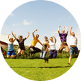

We are a growing global network, with groups in more than 40 countries.

Everyone is welcome. Anyone can join the network, both individuals and organizations. No special skills or background are needed — just an interest in open knowledge.
Connect with a group near you by finding them on the map below or in the list to the left. Join their mailing list, follow them on social media, or attend their next meetup.
Our groups can always benefit from more friendly faces and fresh ideas — they will be happy to hear from you!
Chapters, local groups, and working groups operate independently. They are connected through the Open Knowledge Network to support each other, to share expertise, tools and materials, and to amplify open knowledge activities around the globe.